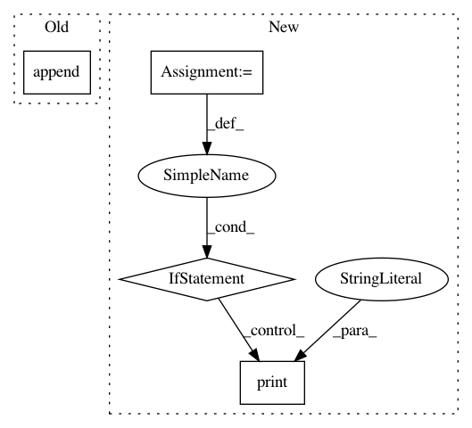

33851dea0f6c75ca1e685037393ea7160506b53a,auto_ml/predictor.py,Predictor,_prepare_for_training,#Predictor#Any#,207
Before Change
y_floats.append(float_val)
else:
indices_to_delete.append(idx)
bad_vals.append(val)
except:
indices_to_delete.append(idx)
bad_vals.append(val)
After Change
// Drop all rows that have an empty value for our output column
// User logging so they can adjust if they pass in a bunch of bad values:
bad_rows = X_df[pd.isnull(X_df[self.output_column])]
if bad_rows.shape[0] > 0:
print("We encountered a number of missing values for this output column")
print("Specifically, here is the output column:")
print(self.output_column)
print("And here is the number of missing (nan, None, etc.) values for this column:")
print(bad_rows.shape[0])
print("We will remove these values, and continue with training on the cleaned dataset")
X_df = X_df.dropna(subset=[self.output_column])
// Remove the output column from the dataset, and store it into the y varaible
In pattern: SUPERPATTERN
Frequency: 3
Non-data size: 4
Instances
Project Name: ClimbsRocks/auto_ml
Commit Name: 33851dea0f6c75ca1e685037393ea7160506b53a
Time: 2016-10-08
Author: climbsbytes@gmail.com
File Name: auto_ml/predictor.py
Class Name: Predictor
Method Name: _prepare_for_training
Project Name: streamlit/streamlit
Commit Name: 01bf5dd323bebd66b7ad60fdaee34eb8f7b76aae
Time: 2018-08-09
Author: armando@playground.global
File Name: lib/streamlit/proxy/Proxy.py
Class Name:
Method Name: _print_remote_url
Project Name: streamlit/streamlit
Commit Name: 883644354ca6c016a9b79d67e0494db88a823c23
Time: 2018-08-14
Author: armando@playground.global
File Name: lib/streamlit/proxy/Proxy.py
Class Name:
Method Name: _print_remote_url